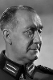

Country:United States, 71 minutes
Spoken languages:
Genres:Adventure, Horror
Director(s):Sam Newfield
Writer(s):Raymond L. Schrock
Video Codec:Unknown
Number: 1516


Certification:
Storyline:
Suspecting that a safari guide is a wanted killer, undercover policeman Geoffrey Bishop (Richard Fraser) joins a safari led by the suspect for a scientist that hopes to find and prove that a fabled white gorilla is a missing link.
Cast: 


Medium: Original DVD,
Comments: Part of: Sci-Fi Classics - 50 Movies
Loaned: No
Aspect ratio: Unknown